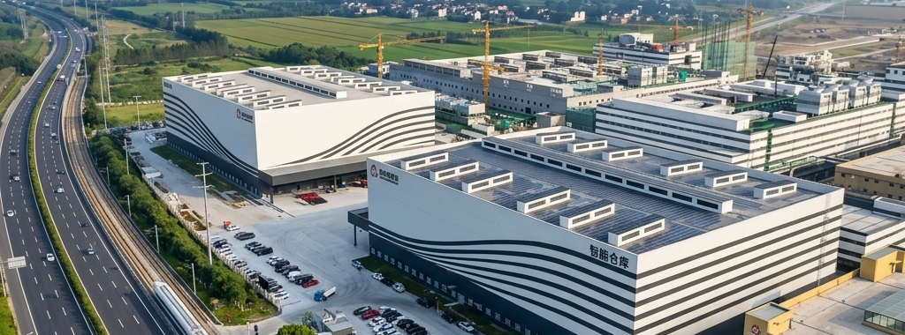
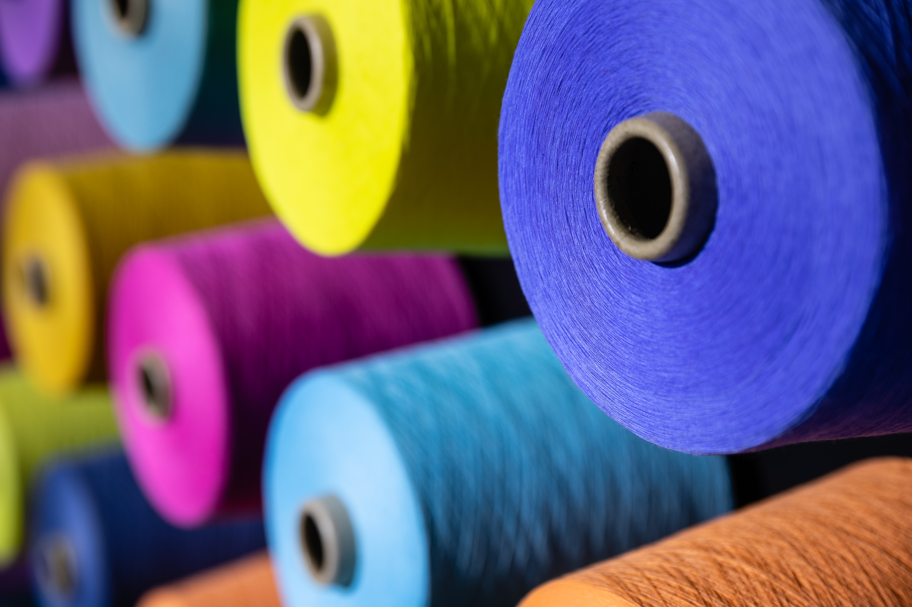

25 Years of Excellencein Professional Textile Services
High-end fashion and performance fibers.
Durability for modern living spaces.
Industrial and automotive solutions.
Sustainable and recycled materials.